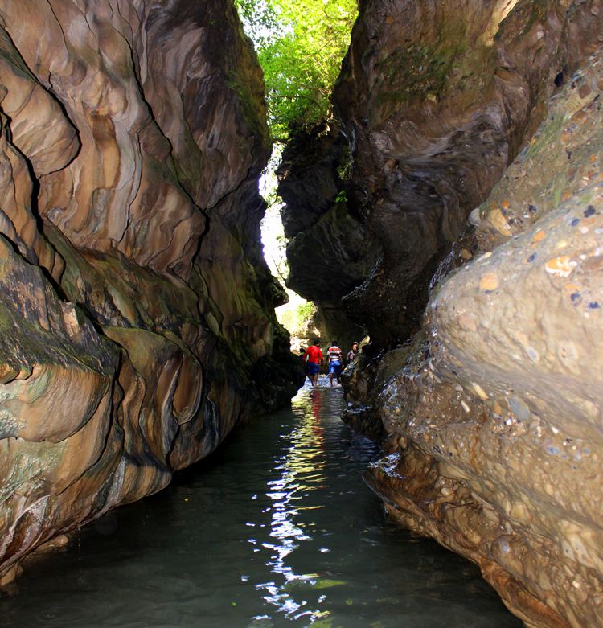

Robbers Cave


In some cases nature catches the best pictures there at any point is.The Robber's Cave is one of those uncommon spots.
This notable place of interest in the town of Anarwala, only a couple of meters from the city of Dehradun, is a natural miracle. Supported by the regular picturesque wealth of Uttarakhand, this normal development is a brilliant outing spot and a most loved traveler objective.
For more information you can click on Robbers Cave